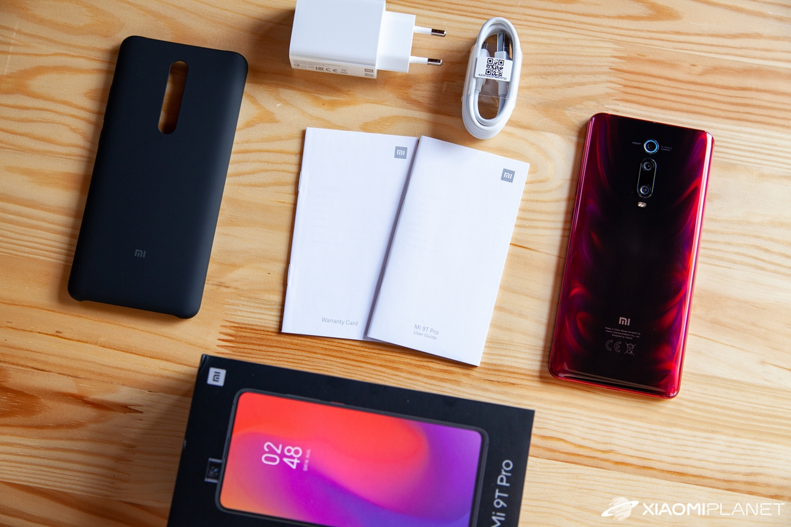
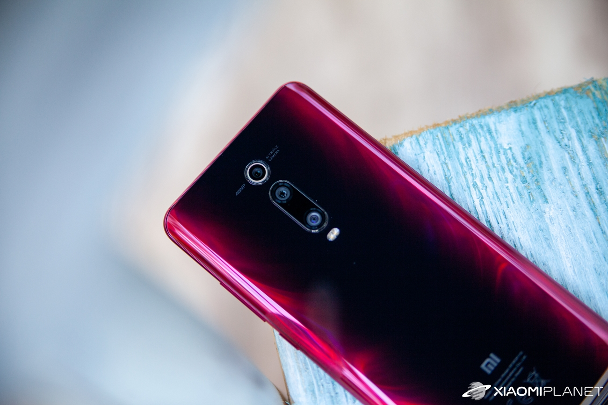
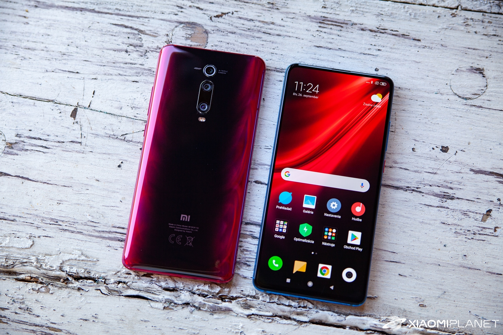

Smartfón prichádza v elegantnej čiernej krabičke, ktorá obsahuje obrázok s názvom modelu. Na vrchu sa nachádza tentokrát čierna papierová obálka, ktorá obsahuje (podobne ako pri Mi 9T) kvalitné plastové púzdro s potrebnými výrezmi pre smartfón.
Pod spomínanou obálkou sa nachádza samotný sklo-kovový smartfón prelepený ochrannou fóliou. Pod ním sa nachádza ešte kábel na nabíjanie s koncovkou USB typu C a lokálna koncovka nabíjačky.
Nabíjačka v balení má výkon 18 W. Smartfón však podporuje až 27W rýchle nabíjanie, konkrétne v štandarde Quick Charge 4+, za čo si výrobca rozhodne zaslúži pochvalu. K využitiu tohto nabíjania si však budeš musieť dokúpiť príslušnú nabíjačku.
Zariadenie Mi 9T Pro prichádza so skutočne totožnými rozmermi ako pôvodné Mi 9T. Rozmery sa tak zastavili na Odvážny dizajn vrátane motorizovanej kamery tohto smartfónu však padne veľmi dobre do ruky, a to najmä vďaka zaoblenej zadnej stene, ale aj zaobleným rohom zariadenia. Pri držaní tak používateľ netrpí veľkosťou zariadenia, čo je vítaným plusom. 
Fotografická výbava ponúka overený hlavný 48 MPx (f/1.8) snímač, ktorý je doplnený aj o 8 MPx (f/2.4) teleobjektív s dvojnásobným optickým zoomom, a tiež o 13 MPx (f/2.4) širokouhlý senzor. Nechýba HDR, panoramatický režim, nočný režim, plnohodnotný 48 MPx režim a ďalšie režimy vrátane spomaleného videa.
Štandardné video je možné natáčať až v rozlíšení 2160p (30/60 fps). Spomínané zadné kamery jemne vytŕčajú z tela zariadenia a sú doplnené o duálny LED blesk.
Model Xiaomi Mi 9T Pro je skutočným vlajkovým smartfónom. Nasvedčuje tomu nielen dizajn a spracovanie zariadenia, ale predovšetkým jeho technická výbava vrátane výkonného procesoru, veľkej batérie a rýchleho nabíjania.
